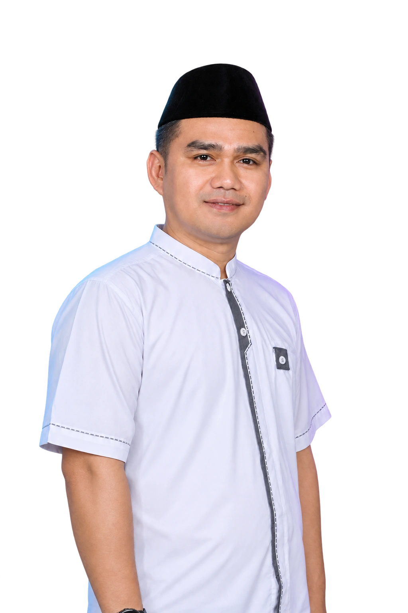
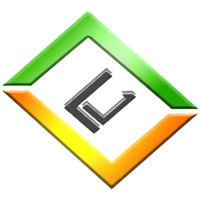

Pengembangan Sistem
Sistem informasi, website, dan aplikasi untuk kebutuhan mitra usaha.
PORTOFOLIO PROFESIONAL
S.Kom., MT
Pengusaha & Dosen
Profesional di bidang IT & digital, aktif mengembangkan bisnis, berbagi ilmu, dan berkontribusi dalam masyarakat.
PT. Liny Jaya Informatika
PT. Solusi Pintar Indonesia

2018sejak
Perjalanan bisnis teknologi2perusahaan
Teknologi & pendidikanRatusan
Sistem & website mitra usaha3atlet PON
Dari 1 atlet, melalui pembinaanTENTANG SAYA
Pengusaha, pendidik, dan bagian dari masyarakat.
Kalfin Alloto'dang adalah seorang pengusaha dan dosen yang berfokus pada teknologi informasi dan digital. Melalui PT. Liny Jaya Informatika dan PT. Solusi Pintar Indonesia, ia mengembangkan usaha di bidang solusi IT serta pendidikan.
Di sela aktivitas bisnis, Kalfin juga berbagi pengetahuan sebagai dosen terbang di beberapa universitas. Ia aktif dalam organisasi kemasyarakatan dan pembinaan olahraga, dengan semangat untuk terus belajar.
Unduh profil profesionalTXTKEAHLIAN & KOMPETENSI
Pengalaman yang tumbuh melalui pengembangan bisnis, penerapan teknologi, dan berbagi pengetahuan.
Sistem informasi, website, dan aplikasi untuk kebutuhan mitra usaha.
Audit sistem informasi dan asesmen tata kelola teknologi informasi.
Analisis dan desain sistem, master plan IT, serta penyusunan roadmap.
Perencanaan program perusahaan yang selaras dengan visi dan misi.
Berbagi ilmu melalui aktivitas dosen dan pengembangan usaha pendidikan.
Pembinaan atlet dan kontribusi aktif dalam organisasi kemasyarakatan.
PERUSAHAAN & KARYA
Mengembangkan ekosistem teknologi dan pendidikan yang menjawab kebutuhan nyata.

BERDIRI 2018 · DIREKTUR
Solusi IT dan digital, mulai dari pengembangan sistem hingga perencanaan transformasi teknologi.
Ratusan sistem & websiteDikembangkan untuk mitra usaha selama beberapa tahun.
BERDIRI 2025 · DIREKTUR
Ruang pengembangan pendidikan melalui kegiatan belajar, pelatihan, dan peningkatan pengetahuan.
Membuka ruang untuk belajarPengembangan program yang sejalan dengan visi dan misi perusahaan.
Solusi digital dalam perjalanan perusahaan.
PENDIDIKAN & KARIER
Perjalanan akademik, pengembangan usaha, dan kontribusi dalam organisasi.
2016
Magister Teknik · S2
Program Studi Teknik Informatika, UNHAS.
Aktif sebagai dosen terbang di beberapa universitas, di sela keseharian mengembangkan bisnis IT dan digital.
2017 — 2021 PROFESIONAL
Tenaga Ahli IT
Membantu penerapan pelayanan Sistem Pejabat Pengelola Informasi dan Dokumentasi (PPID) secara digital.
2018 KEWIRAUSAHAAN
Direktur
Mengembangkan usaha IT dan digital serta perencanaan strategis program perusahaan.
2021 — 2025 KEPEMIMPINAN
Ketua Umum · Tingkat Provinsi
Memimpin pembinaan atlet dan berkontribusi pada lahirnya atlet berprestasi di tingkat nasional.
Peningkatan atlet PON dari 1 menjadi 3 atlet.
2025 KEWIRAUSAHAAN
Direktur
Mengembangkan usaha pendidikan melalui kursus, pelatihan, bimbingan belajar, seminar, dan kegiatan pendidikan lainnya.
PRINSIP PROFESIONAL
“Jangan pernah berhenti belajar dan teruslah berjuang untuk mencapai setiap tujuan, serta libatkan Tuhan dalam setiap rencanamu.”
MARI TERHUBUNG
Untuk kebutuhan solusi digital atau kolaborasi pendidikan, kenali lebih jauh dan hubungi melalui kanal resmi perusahaan.
Unduh profil profesionalTXT